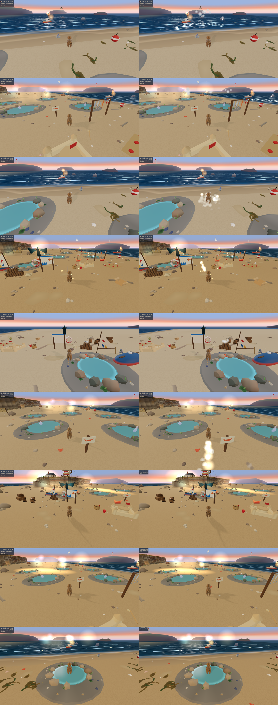

PLAY camera (tools/verify/verify-lighthouse.html, ?place=1&wx=off; BEFORE adds &novoice=1, which hides the pass's points). Rows 1-6 are mid-reaction, BEFORE | AFTER at 1280x720: meow (sea glint ripple, gulls wheeling up), meow near the pools, pounce (sand and spray), sniff (scent sparkles toward the pools), still (sandpipers settling, a gull on the lobster pots), zoomies (sand and foam wake). Rows 7-9 are passes 1-8 checked: arrival, pools, pier, AFTER 1280x720 | AFTER 1920x1080 (nothing odd found).
Honest: the reactions are pooled points, so they read as soft blobs rather than drawn animals, and the seals' heads and crab claws are off screen or too small in these frames (seals are 35 m away). The still-shot sandpipers are small brown smudges.
Whole frame (calls / triangles drawn / meshes / casters), identical before and after: arrival 214 / 90,402 / 219 / 46; pools 146 / 76,792 / 219 / 46; pier 115 / 69,067 / 219 / 46. Scene triangles 84,270, net 0 (a reaction that sends a crab running changes the crab's own few triangles by a few).
